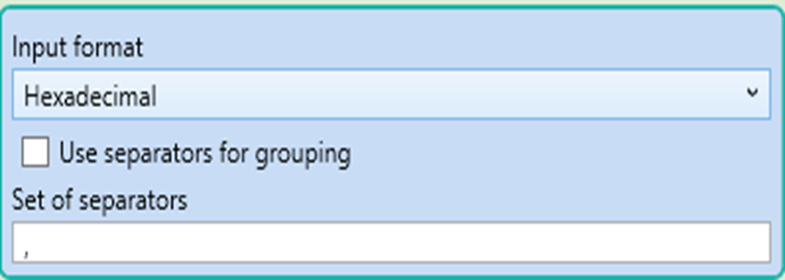
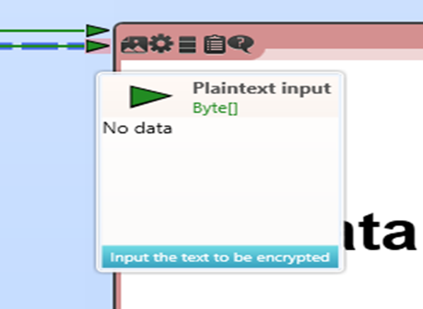
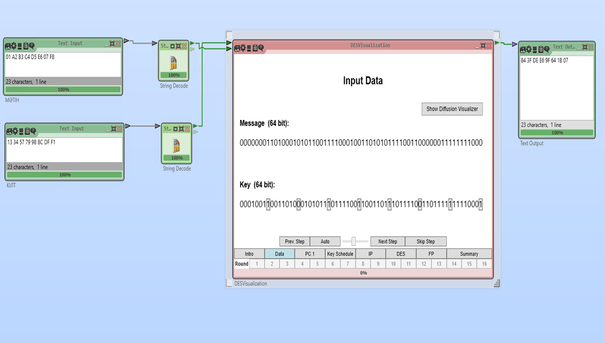

DES (Data Encryption Standard) – блоктық шифрлау алгоритмі, 64 биттік блоктарды 56 биттік кілт арқылы шифрлайды. Бұл алгоритм симметриялық болып табылады, яғни дешифрлау сол кілтті қолдану арқылы орындалады. Бұл жерде біз DES алгоритмын пайдаланып, мәтінді шифрлау процесін қарастырамыз.
Home → Жаңа (New) таңдаңыз. Жаңа жұмыс кеңістігі (Workspace) ашылады.
Қажетті блоктарды жобаға қосамыз:
Мақсаты: Бұл блок арқылы ашық мәтінді және кілтті енгіземіз. DES 64 биттік блоктармен жұмыс істейтіндіктен, мәтін ұзындығы 64 биттен кем болмауы керек.
Мақсаты: Бұл блок DES алгоритмінің қалай жұмыс істейтінін визуалды түрде көрсетеді.
Мақсаты: DES шифрланған мәтін бинарлық немесе HEX кодта болуы мүмкін, оны оқылатын мәтінге түрлендіру үшін String Decoder қолданылады
Мақсаты:
String Decoder (Жолды кодтау) блогының параметрін келесідей өзгертеміз.
ЕСКЕРТУ
БЛОГТАРДЫ ӨЗАРА БАЙЛАНЫСТЫРҒАН КЕЗДЕ , БАЙЛАНЫС НҮКТЕЛЕРІНІҢ АНЫҚТАМАСЫНА МӘН БЕРІҢІЗ. АНЫҚТАМАСЫН КӨРУ ҮШІН БАЙЛАНЫС НҮКТЕСІНЕ ТІНТУІРДІ АПАРСАНЫЗ ЖЕТКІЛІКТІ. БАЙЛАНЫС НҮКТЕЛЕРІ БІР-БІРІМЕН ДҰРЫС БАЙЛАНЫСҚАНЫ ЖӨН.
"Play" (▶) түймесін басып, шифрлау нәтижесін қараңыз.
01 A2 B3 C4 D5 E6 07 F8 мәтінің 13 34 57 79 9B BC DF F1 кілті арқылы шифрлап, "84 3F DE E6 9F 64 1B 07" шифрланған мәтінін алдық. Бұл HEX түріндегі шифрланған мәлімет.
Теориялық бөлімде талданған мысалдың дұрыс екендігіне көз жеткізіңіз.
Мысалдағы "84 3F DE E6 9F 64 1B 07" шифрланған мәтінін дефирлаңыз(Ол үшін DES блогын қолданыңыз).